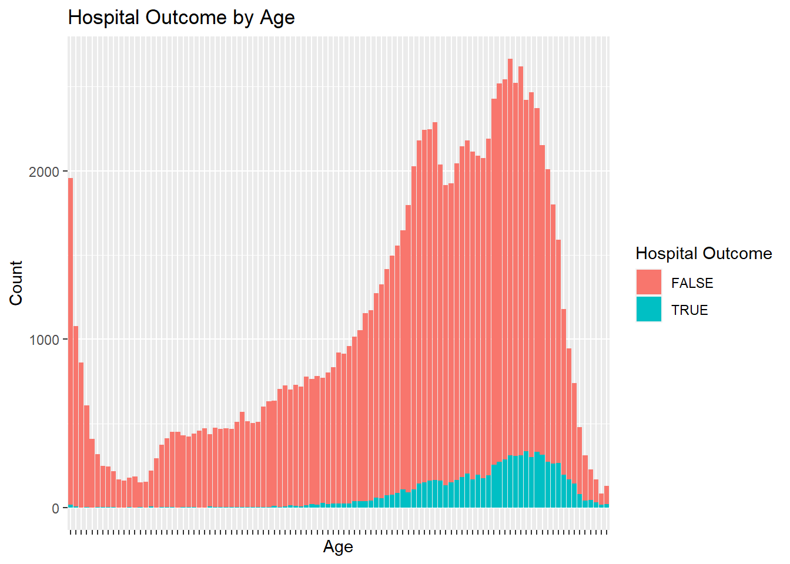

In this post, we will analyze Sepsis Survival rates and conclude what possible variables can lead to higher mortality rates from sepsis. This data comes from a primary cohort of hospitalized subjects between 2011 and 2012 in Norway. Found on keggle open source[Sepsis Survival Prediction](https://www.kaggle.com/datasets/joebeachcapital/sepsis-survival-minimal-clinical-records)
library(readr)library(parsnip)library(tidyverse)
── Attaching core tidyverse packages ─────────────────── tidyverse 2.0.0.9000 ──
✔ dplyr 1.1.3 ✔ purrr 1.0.2
✔ forcats 1.0.0 ✔ stringr 1.5.0
✔ ggplot2 3.4.4 ✔ tibble 3.2.1
✔ lubridate 1.9.3 ✔ tidyr 1.3.0
── Conflicts ────────────────────────────────────────── tidyverse_conflicts() ──
✖ dplyr::filter() masks stats::filter()
✖ dplyr::lag() masks stats::lag()
ℹ Use the conflicted package (<http://conflicted.r-lib.org/>) to force all conflicts to become errors
library(ggplot2)library(lmtest)
Loading required package: zoo
Attaching package: 'zoo'
The following objects are masked from 'package:base':
as.Date, as.Date.numeric
# A tibble: 2 × 2
Sex percent_survived
<dbl> <dbl>
1 0 92.2
2 1 93.2
Above is a mortality table created to analyze a patient’s hospital outcome based on Sex. A hospital outcome of 1 indicates the patient survived. Sex equaling 1 indicates a male. As seen when analyzed, females and males have similar survival rates at 92.15% for females and 93.18% for males.
ggplot(SepsisData, aes(x =factor(age_years), fill =factor(hospitaloutcome==0))) +geom_bar() +labs(title ="Hospital Outcome by Age",x ="Age",y ="Count",fill ="Hospital Outcome")+theme(axis.text.x =element_blank())

Graphed above, we have the Hospital Outcomes for patients as age increases from 0-100. When it equals true, that means we had a negative outcome; as seen above, there is an increase in negative outcomes as patients get older.
In the code block above, we turn our continuous variables into factor variables so we can run the log function correctly, as they are binomial in nature anyway.
model_summary1 <-logistic_reg() %>%set_engine("glm") %>%fit(hospitaloutcome ~ episode_number+Sex+age_years, data = SepsisData, family ="binomial")tidy(model_summary1)
Above, we chose to run a generalized linear model instead of a regular lm. This is due to our output being of a binomial nature. As seen above, our predictor variables have p values below a significance level of .05 besides episode number. At a biological level, this makes sense because Sepsis is an infection in the bloodstream from any number of different infections. Previous instances of Sepsis would not necessarily mean someone is at risk of further having Sepsis or is better protected from reinfection. So, previous episodes of Sepsis would not tell us much about survival chances.
model_summary2 <-logistic_reg() %>%set_engine("glm") %>%fit(hospitaloutcome ~Sex+age_years, data = SepsisData, family ="binomial")lr_test <-lrtest(model_summary1$fit, model_summary2$fit) %>%print()
Likelihood ratio test
Model 1: hospitaloutcome ~ episode_number + Sex + age_years
Model 2: hospitaloutcome ~ Sex + age_years
#Df LogLik Df Chisq Pr(>Chisq)
1 4 -26795
2 3 -26796 -1 2.7199 0.0991 .
---
Signif. codes: 0 '***' 0.001 '**' 0.01 '*' 0.05 '.' 0.1 ' ' 1
Our final change will be to remove the episode_number variable from the original dataset and analyze if the new model is a better fit with a lrtest. Due to the large P value > 0.05, we can assume the larger model, including episode number, does not necessarily indicate a significantly better fit.